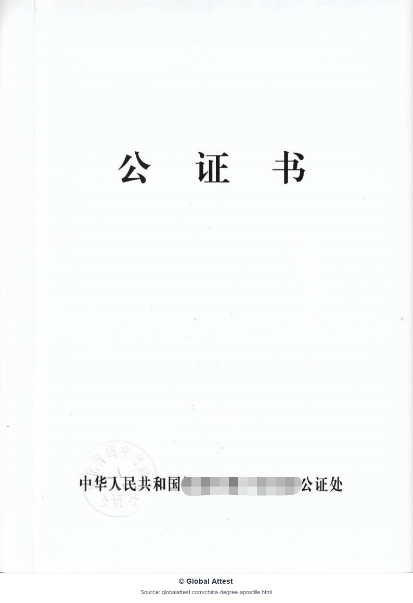
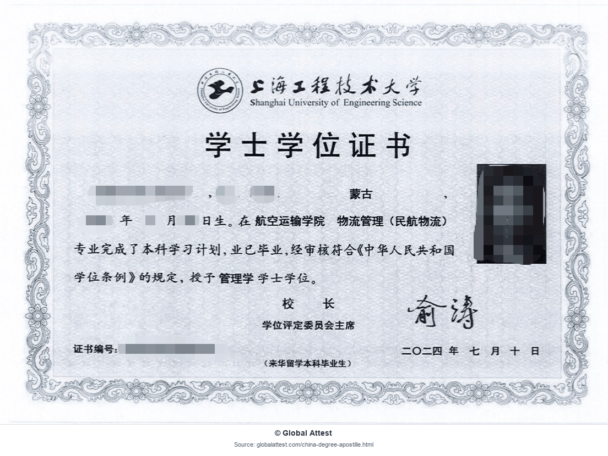
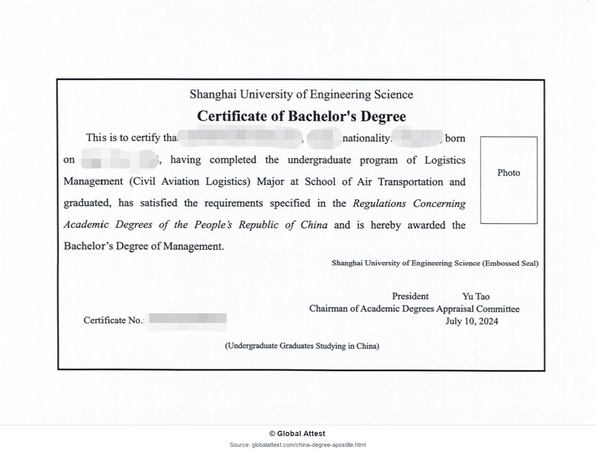
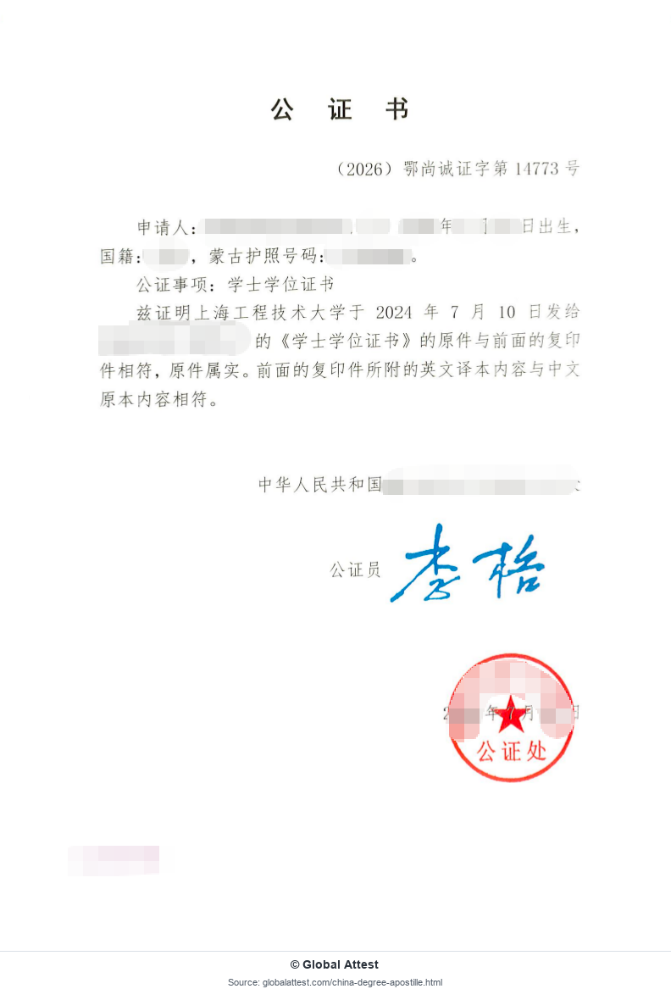
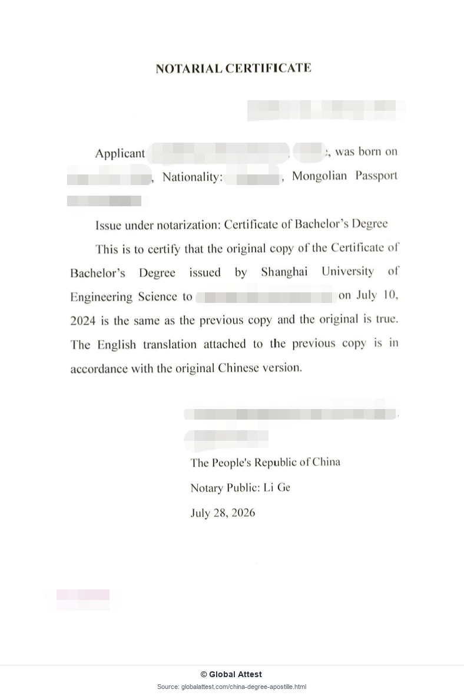
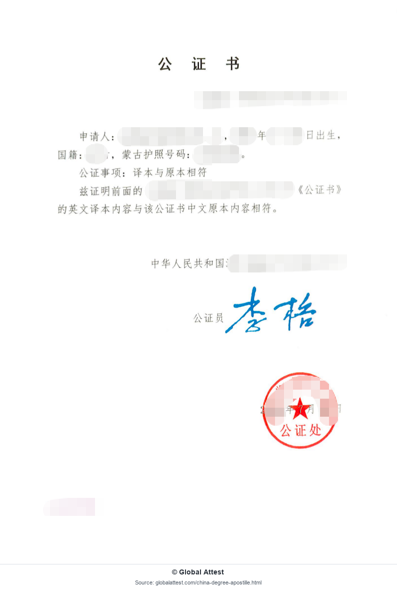
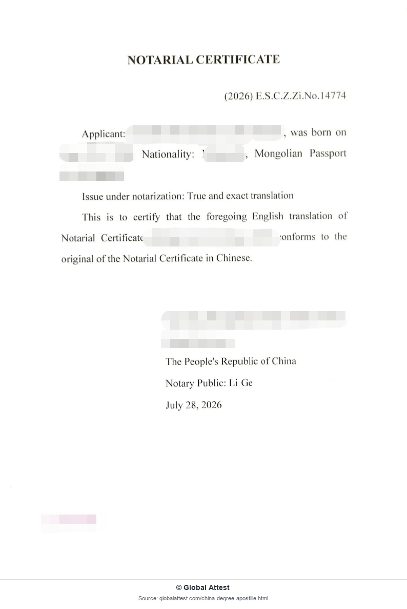
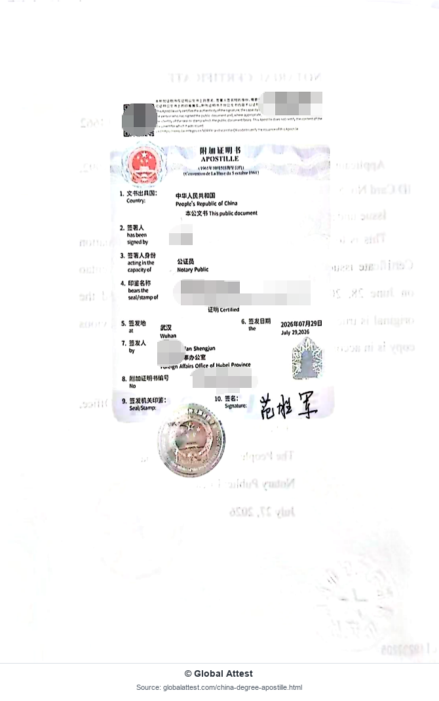

澳大利亚
升学与技能评估
中国学历海牙认证（附加证明书）适用于符合条件、拟在接受《海牙认证公约》程序的国家或地区使用的中国学历文件。它主要证明公文书或公证书上相关签名、印章及签署人身份等来源事项。
海牙认证不等于核验学历本身，也不证明原文件中的每一项陈述均属实。是否需要海牙认证、学历学位验证、翻译、公证副本或其他文件形式，由接收机构的要求决定。
中国学历文件办理海牙认证前可能需要先行公证。使用国家和接收机构也可能要求翻译、独立的学历学位验证或其他认证程序。
了解您的学历文件、使用国家及接收机构的具体要求。
根据确认的办理要求，协调所需的翻译和公证。
协调向中国相关主管机关申请附加证明书。
核查已完成的文件；适用时提供扫描件供您确认。
安排已完成文件的寄送，并可根据需要提供国际快递服务。
具体步骤和时间取决于文件、相关机关及接收方要求；需要时另行安排翻译。
我们可协助准备的中国学历及教育相关文件包括：
具体办理方式取决于文件类型和使用国家的要求。我们会在办理前评估是否符合相关条件。
以下为中国学历文件在海外可能涉及的使用场景示例。
升学与技能评估
求职与专业资格认可
移民与就业
升学与专业资格申请
学习与就业
工作与居留申请
以上仅为使用场景示例，不代表保证接受。各国及机构要求可能不同，亦可能要求额外验证或翻译。请在办理前确认适用程序。
具备协调中国学历文件用于海外相关服务的经验。
从文件审核、办理协调到文件寄送提供支持。
在办理过程中提供实用指引及进度沟通。
协助需要将中国文件用于海外的个人及机构。
中国学历海牙认证适用于符合条件、拟在接受《海牙认证公约》程序的目的地使用的中国学历文件。它主要证明文件上相关签名、印章或签署人身份等来源事项，不核验学历本身，也不保证接收机构最终接受。
预计时间取决于学历文件、签发地区、公证及翻译要求、主管机关审核，以及是否需要补充记录。公共假期和快递也可能增加时间。审核现有文件及使用要求后，Global Attest 可提供预计安排，但实际进度仍以相关机关为准。
通常需要《海牙认证公约》在中国与使用国家之间生效，且适用于该文件及其用途。请核对 HCCH 公约状态表及接收机构的要求。仍可能需要额外验证、翻译或其他程序。
初步评估时，请说明您持有学位证书、毕业证书还是两者兼有，并告知签发学校、使用国家、用途、是否持有原件，以及接收方的具体要求。后续可能需要身份证明或授权材料。首次咨询请勿发送未经遮盖的敏感资料。
对于中国外交部现行指引所涵盖、由中国教育机构签发的毕业证书、文凭、学位证书及成绩单，需要先在中国办理公证，再由符合条件的涉外公证书办理海牙认证。具体公证形式及辅助材料要求仍可能因文件和接收机构而异。翻译属于独立服务，并非办理海牙认证就自动包含翻译。接收机构可能要求英文或目的地语言译文、专业认证翻译或翻译公证，安排顺序也可能因程序不同而变化。Global Attest 会在审核文件和接收方要求后，协助准备适用的翻译。
报价取决于文件类型和数量、公证、翻译、主管机关要求及寄送安排。审核个案后，我们会确认适用服务与费用，不提供适用于所有情况的统一固定价格。
中国学历文件用于海外就业、专业执照申请、大学入学、移民、企业合规或其他国际事务时，可能被要求办理海牙认证。通常需要使用国家及接收机关接受该文件和用途适用的海牙认证程序。
如《海牙认证公约》在中国与使用国家之间生效，且适用于文件的预定用途，通常采用海牙认证程序。对于不适用公约的目的地，仍可能需要领事认证。请先查阅 HCCH《海牙认证公约》状态表，再向使用国家及接收机构确认当前要求。不适用海牙认证程序时，可参阅我们的 使馆及领事认证说明 。
是否符合办理条件及所需准备，取决于文件、签发机构和接收机关。
申请服务前，请了解 中国毕业证书与学位证书的区别 ，并确认海外接收方具体要求哪一种文件。
两者用途不同，不能相互替代。
学历学位验证通过适当的学业验证来源，核查学历、学校或学习记录等信息。其作用是确认学业信息，而非认证文件上的官方签名或印章。
海牙认证主要证明符合条件的公文书或公证书上相关签名、印章及签署人身份等来源事项。接收机构另行要求学历验证时，不能用海牙认证替代。
具体顺序可能因文件及主管机关而异。
核对使用国家、用途及接收机关的要求。
确认学历记录类型、签发机构，以及现有原件或副本。
中国教育机构签发的毕业证书、文凭、学位证书及成绩单，应先安排公证。须确认具体公证形式、辅助材料，以及是否需要符合要求的副本或验证。
接收方有要求时，准备专业认证翻译或翻译公证。
通过适用渠道提交符合条件的公文书或公证书。
核查证书可见信息，再安排返还或寄送。
请准备初步评估所需信息。提供这些信息并不保证能够签发附加证明书，也不保证接收机构接受最终文件。
中国外交部现行指引 要求中国教育机构签发的毕业证书、文凭、学位证书及成绩单先在中国办理公证，再由符合条件的涉外公证书办理海牙认证。具体公证形式、辅助证明及翻译要求，可能取决于文件和接收机构的要求。
中国外交部是中国签发附加证明书的主管机关。经外交部授权的地方外事办公室也可在授权范围内签发附加证明书，相关说明见 中国向 HCCH 提交的官方声明.
接收机构可能要求专业认证翻译、翻译公证，或指定语言与格式。具体办理顺序取决于学历文件、使用国家及提交要求。
预计时间取决于文件类型、签发地区、公证和翻译要求、主管机关审核，以及是否需要补充记录。
公共假期和快递可能增加时间。Global Attest 会在审核个案后提供预计安排，最终时间仍以相关机关为准。
以下八张脱敏页面展示学位文件、译文、公证书及随附的中国附加证明书。点击图片可查看大图。








这些脱敏样本图片由 Global Attest 整理发布，仅供参考。
用于信息参考时引用这些图片，须遵守以下条件：
未经许可，不得进行商业再分发。
© Global Attest——图片扫描、脱敏、编排及发布。原文件权利仍归相应签发机关或权利人所有。
通过以下专题页面了解相关服务、验证或文件办理路径。 办理细节可参阅学历海牙认证办理指南。
中国教育机构签发的毕业证书、文凭、学位证书及成绩单，可按适用的先公证后认证程序准备。中国外交部现行指引要求这些文件先在中国办理公证，再由符合条件的涉外公证书办理海牙认证。在读证明、学习／出勤证明、专业资格及其他学业记录，需要单独评估。
不是。学历学位验证通过适当的验证来源，核查学历、学校或学习记录信息。海牙认证主要证明符合条件的公文书或公证书上相关签名、印章及签署人身份等来源事项，以便用于国际事务。接收机关可能要求其中一种、两种程序或其他材料，具体取决于用途。
翻译属于独立服务，并非办理海牙认证就自动包含翻译。接收机构可能要求英文或目的地语言译文、专业认证翻译或翻译公证，安排顺序也可能因程序而异。Global Attest 会在审核文件和接收方要求后协助准备适用的翻译。
部分个案可在持有人离境后，通过授权代表或文件协助程序协调学历文件的海牙认证。是否可行取决于原文件、签发地区、公证要求及当地机关规定。可能需要原件、身份证明或授权材料，并非每个个案的所有环节均可远程完成。
WES 的材料要求取决于评估类型、学历、签发学校及当前提交指引。不能假定海牙认证可替代学历学位验证、成绩单寄送或其他 WES 要求。申请人应核对适用于自身个案的最新 WES 指引，并按指定格式和提交渠道准备学历文件。
Global Attest 是独立的文件协助服务机构。 我们并非中国外交部、地方外事办公室、大学或接收机构。适用程序及文件签发由相关机关决定，是否最终接受由接收机构决定。海牙认证、公证、翻译及学历文件要求，可能因使用国家和文件类型而异。